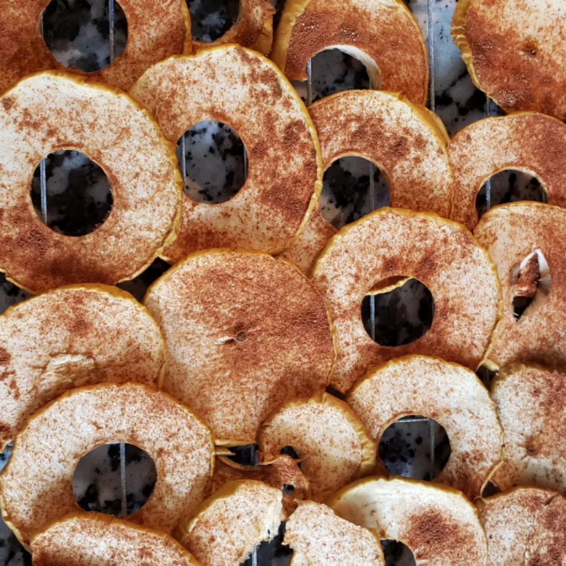

Apple Chips

Description
Healthy, and delicious apple chips snack for kids! Yields 6 servings in around 90 minutes.
Ingredients
- 2 Golden Delicious apples, cored and thinly sliced
- 1 ½ teaspoons white sugar
- ½ teaspoon ground cinnamon
Directions
- Preheat oven to 225 degrees F (110 degrees C).
- Arrange apples slices on a metal baking sheet.
- Mix sugar and cinnamon together in a bowl; sprinkle over apple slices.
- Bake in the preheated until apples are dried and edges curl up, 45 minutes to 1 hour. Transfer apple chips, using a metal spatula, to a wire rack until cooled and crispy.